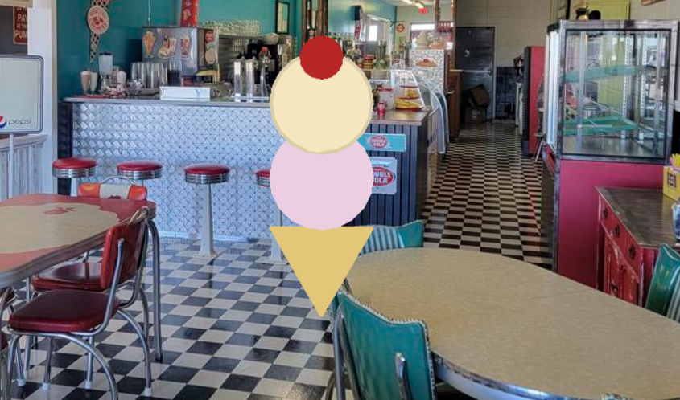
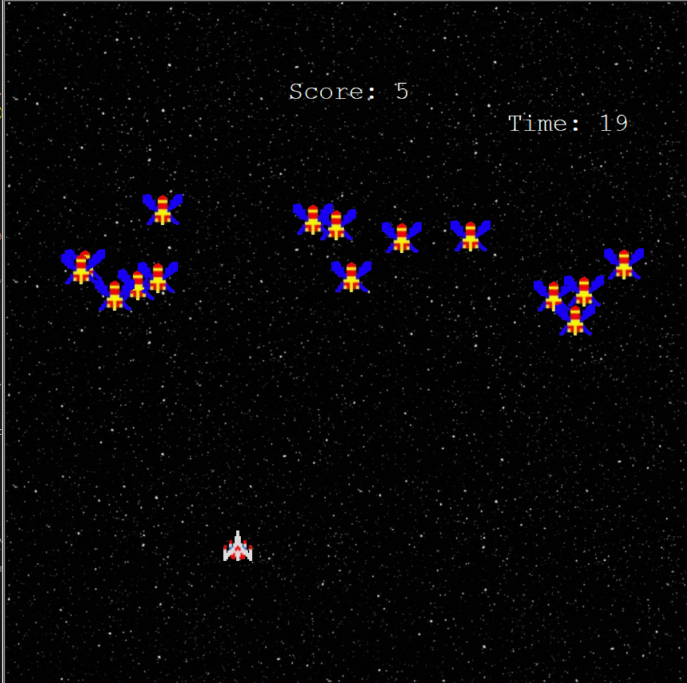
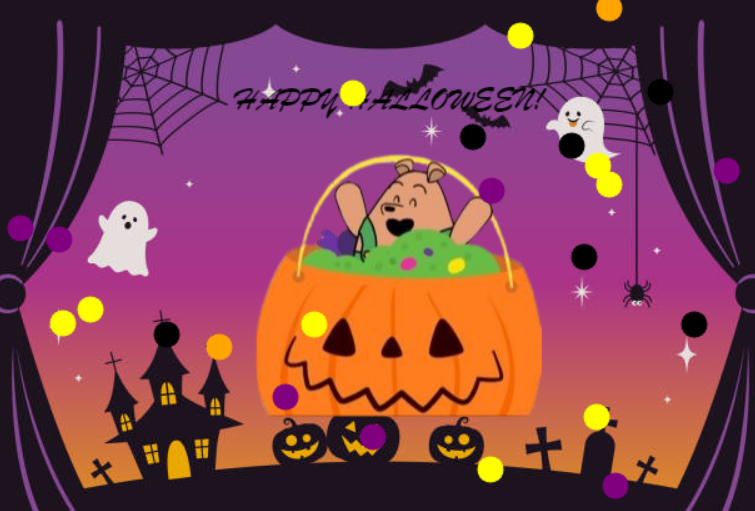
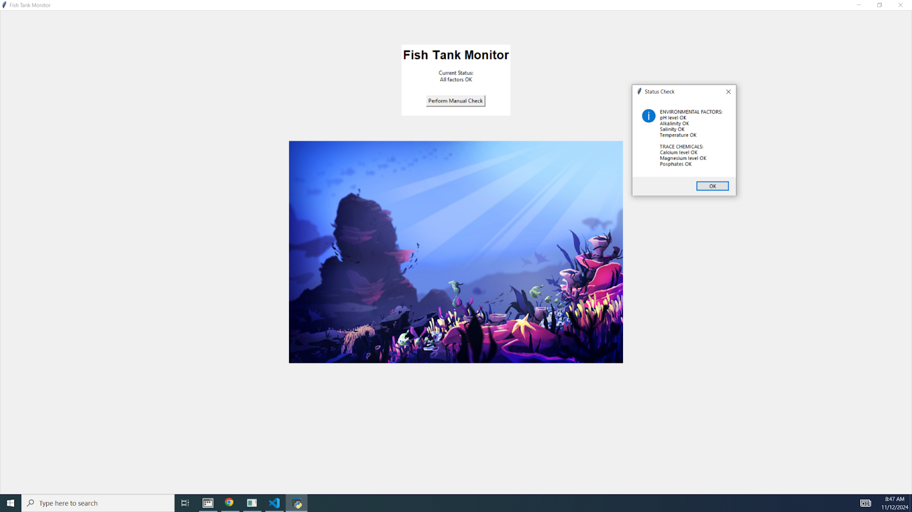
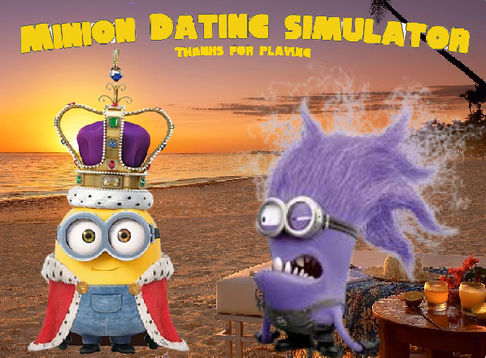
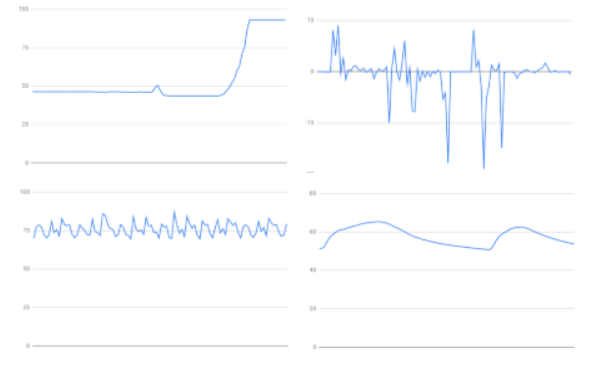

HOME PAGE
PORTFOLIO
ABOUT ME
This Is My Portfolio Page
Ice Cream Parlor Project

My first project ever done fully in python was a simple icecream parolor game.
It uses pyhton turtle, a common class of python, to ask questions of what type of icecream you want!
You can pick from a variety of flavors, amount of scoops, and toppings!
The project was co-createad by Mikhal Tapia, who helped signifigantly with the if then procedure.
An image of a possible ice cream in the game is placed above!
PLTW 1.2.5 Galaga Project

My second project completed fully in python is a Galaga remake.
It uses pyhton turtle, a common class of python, to ask move different entities, allow for shooting, and checking for collisions.
The game spawns multiple enemies you have a time limit to hit.
If you hit every enemy in the time limit, a new wave spawns and you can keep going.
The project was completed with Tristan Bergo, and a picture is shown above.
PLTW 1.3.1 Card Project

My third project completed fully in python is an E-Card.
It uses pyhton turtle, a common class of python, to import images, add random lists, and make confetti.
The card asks if you want a Trick or a Treat
Depending on what you select, it will make a scary or fun image!
The project was completed with a group of 4, and a picture is shown above.
PLTW 2.1.6 Fishtank Monitor Project

My 4th project completed fully in python is an a security system for a fish tank monitor.
It uses pyhton to create a security system.
We also used it to find security vulnerabilities.
The project was very fun, but challenging
The project was completed with a group of 4, Kamryn, Maddy, Lauren, and myself. A picture is shown above.
Minion Dating Simulator Scratch Project

My first project done in Scratch!
I created it with a group of 4, Kamryn, Maddy, Lauren, and myself. A picture is shown above.
The project was very fun, but challenging.
We made a Minion dating simulator,
where you get to chose different outfits and locations to go on a date.
It used music, many different sprites, and 5 backgrounds.
6th Project 3.1.6

Where Is The Rover?
This project was completed with Kosu, Taeuk, Amir, and myself.
The project was extremely challenging and forced us to think very critically.
We use the sheets of data sent by the rover,
and decided that we believe the rover stood in the tropical islands.
The temperature was pretty stable until the daytime when it improved dramatically.